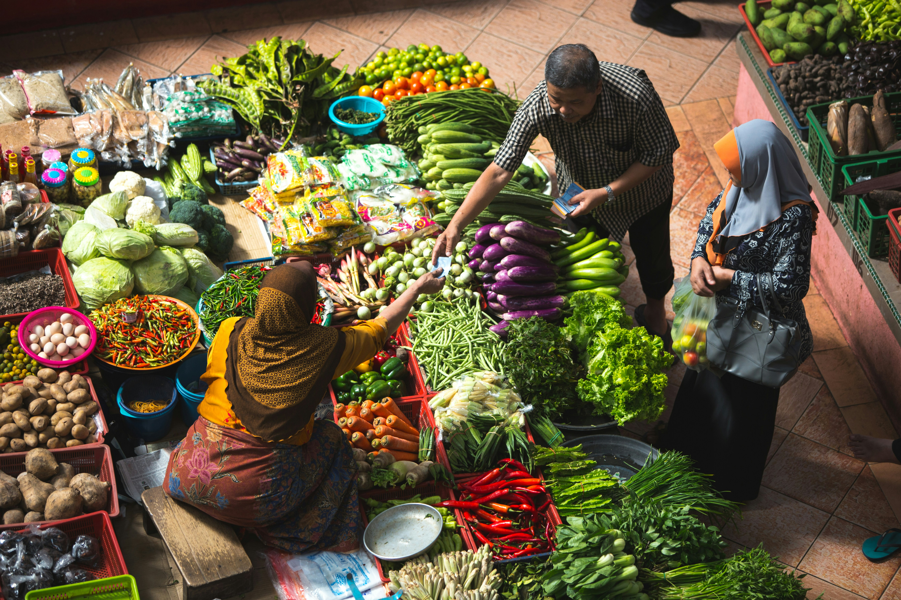
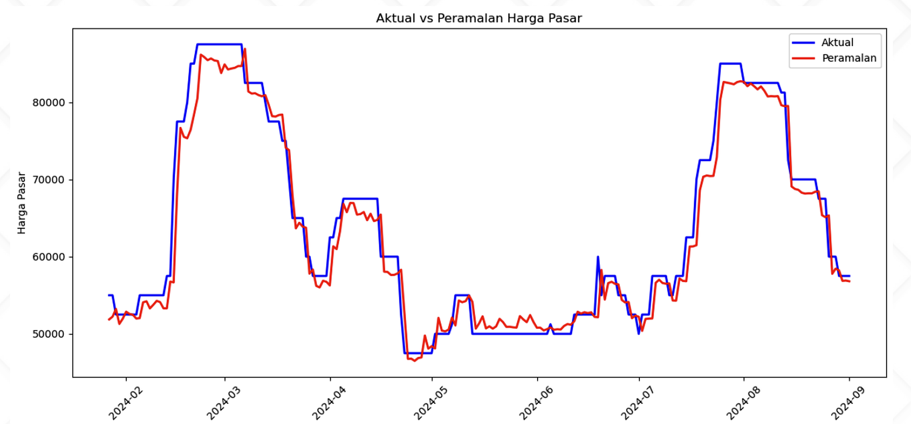

Machine Learning Forecasting menggunakan XGBoost dengan Feature Engineering berbasis Time Series untuk membantu analisis harga cabai rawit.
Pantau.id adalah inisiatif digital berbasis Machine Learning dan data real-time yang dirancang untuk membantu petani, pedagang, dan pengambil kebijakan memahami, mengantisipasi, dan mengatasi fluktuasi harga cabai rawit di Kota Bandung.
Kami percaya bahwa akses terhadap informasi prediktif bukanlah kemewahan — tapi kebutuhan strategis dalam membangun sistem pangan yang adil, efisien, dan berkelanjutan.
Prediksi berbasis suhu, kelembaban, & curah hujan harian.
XGBoost dengan akurasi peramalan yang optimal.
Membantu pelaku usaha mengambil keputusan cerdas.
Dari petani hingga konsumen, kami hadir untuk semua.

📈 Fakta Terkini
Harga cabai rawit melonjak hingga 140% hanya dalam waktu 3 minggu pada tahun 2024.
Model XGBoost ini dibangun menggunakan kombinasi data cuaca dan data harga pasar untuk menghasilkan prediksi yang lebih akurat dan realistis.
Sumber data: BMKG (Badan Meteorologi, Klimatologi, dan Geofisika)
Sumber data: PIHPS (Pusat Informasi Harga Pangan Strategis – Bank Indonesia)
XGBoost bukan model time series native. Model ini tidak memahami urutan waktu secara langsung seperti ARIMA atau LSTM. Oleh karena itu, diperlukan rekayasa fitur agar pola temporal dapat direpresentasikan ke dalam bentuk tabular.
Data harga cabai rawit memiliki karakteristik time series seperti tren, musiman, dan efek kejadian eksternal. Tanpa transformasi fitur, model tidak dapat menangkap pola waktu secara eksplisit.
Menggunakan nilai historis (t-1, t-7, t-30) untuk menangkap pengaruh harga sebelumnya terhadap harga saat ini.
Rata-rata harga dalam periode tertentu untuk mengurangi noise dan menangkap tren jangka pendek.
Menangkap pola musiman berdasarkan minggu, bulan, dan siklus tertentu dalam data harga.
Mengukur dampak hari besar dan jarak menuju hari besar terhadap fluktuasi harga pasar.
Dengan feature engineering ini, data time series diubah menjadi bentuk tabular yang dapat dipahami XGBoost. Hal ini memungkinkan model menangkap tren, musiman, dan efek eksternal secara lebih akurat.
Evaluasi performa model XGBoost dalam memprediksi harga cabai rawit
1921
Mean Absolute Error
2672
Root Mean Square Error
2.96%
Mean Absolute Percentage Error
0.95
R-Squared

Hasil evaluasi menunjukkan bahwa model XGBoost mampu mengikuti pola fluktuasi harga dengan cukup baik. Prediksi (garis merah) memiliki tren yang selaras dengan data aktual (garis biru), terutama dalam menangkap kenaikan dan penurunan harga secara periodik.
Secara keseluruhan, model sudah cukup stabil dalam memprediksi tren harga, meskipun masih terdapat deviasi kecil pada beberapa titik volatilitas tinggi.
XGBoost dengan feature engineering mampu menangkap pola harga dengan cukup baik, terutama pada tren stabil. Namun performa menurun pada kondisi harga yang sangat fluktuatif.